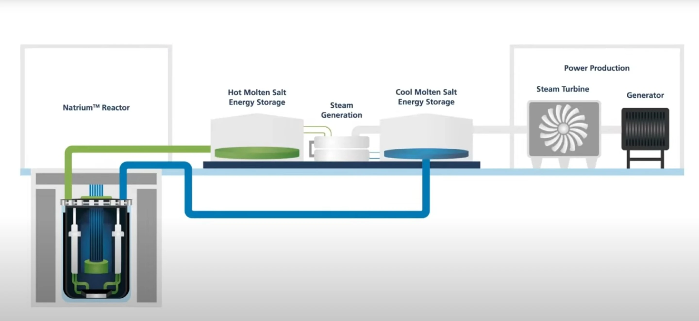

Dr. Fauci Subpoenaed
Anthony Fauci to appear before Senate committees on July 29th to be questioned on US funding of gain-of-function research
"Next Gen" Molten Sodium Reactor coming to Kemmerer, Wyoming

Anthony Fauci to appear before Senate committees on July 29th to be questioned on US funding of gain-of-function research
Today, 3rd Place Final: France v. England
Tomorrow, Final: Spain v. Argentina
"Guardian of the Hormuz Strait", President Donald Trump says that's what the United States has designated itself as. The USA will immediately begin imposing a 20% fee on all goods passing though the strait to reimburse costs for safe passage, according to Trump.
This week, United States Secretary of State hosted the International Ministerial on the Resurgence of Political Terrorism in Washington, D.C.
Delegates from over 60 countries were in attendance.
US Secretary of State Marco Rubio denouced political terrorism from any motivation, right or left.
Rubio did call out the increase in left wing terrorism over the years and how it has gone under reported.
"It is time for the people of the civilized world to defend ourselves. To stand united against this encroaching darkness and fight for what is ours," Rubio stated.
Graham served as a US Senator from South Carolina for over 20 years. After a sudden illness, the District of Columbia Medical Examiner stated that Graham sufferd an aortic dissection caused by arteriosclerotic cardiovascular disease (a tear in the main artery of his heart).
South Carolina Governor has appointed Graham's sister, Darline Graham Nordone to serve out the remainder of Graham's until its conclusion in 2027.
TerraPower Natrium reactor in Kemmerer, WY, is the first new commercial nuclear reactor approved after a decade of standstill.
In 2025, President Trump ordered the Nuclear Regulatory Commission (NRC) to cut red tape in order to facilitate new nuclear energy deployment.
The NRC issued the approved construction permit to TerraPower in 2026, marking the first approval of a non-light water reactor in over 4 decades.
While the prospect of cheap, efficient, clean nuclear power is a postive to some, others in the community say that they are cautious of nuclear power construction and opperation.
This story from last week has only intensified, with statements from Civil Rights Attourney Ben Crump and Rev. Al Sharpton.
A second autopsy has been performed, by an indpeendent pathologist in Washington D.C. This came from Attourney Crump's distrust of the first autopsy completed at the Mississippi Medical Examiner's Office.
Neither autopsy results have been released, with most assuming that the labs are waiting for toxicology results to come back, which can take multiple weeks.
Some online have accused Wells' friends of murder and racism, while no actual charges are present and still no official suspicions of foul play.
Others have pointed out that attourney Ben Crump called for a private autopsy of Trey Reed, a black student found dead hanging at Mississippi Delta Community College in 2025.
Crump never released the findings of this private autopsy, not even to the Reed family. Some believe that Crump is treating this situation the same way.
Regardless, the story will continue and more facts will come to light when the Mississippi Medical Examiner releases their autopsy report.
The Federal Trade Commision has forced John Deere company to publicly provide the same tools and diagnostic software used by John Deere's authorized dealers. Farmers now have the opportunity to diagnose and repair their own equipment without depending on authorized dealer proprietary repair technology Deere was accused of monopolizing the repair market by withholding technology necessary for repairs and now the company must pay $1 million to five states for enforcement costs and faces strict FTC oversight for years to come.
Claims that OpenAI poaching hundreds of Apple employees resulted in a lawsuit in the state of California this week. Apple then alleged that these former employees were guided to guided to leak confidential information unreleased technologies and strategies to the OpenAI company.
Consider your eternal soul. This week, think about eternity, contemplate the big picture of life.
If we believe that our spirit lives for eternity with Christ after this life, what kind of perspective does that give us on the few years that we are living?
Our actions should be shaped in the context of the eternity that we believe in.
Remember to pray for our leaders this week. Pray for those that despise you and that you despise.
Pray for those in leadership in your community, that they would make wise decisions based on the logic of Christ.
Remember that we have been saved by Christ despite our failures and past actions. Every action that we have in this life is an opportunity to share Christ's love with others.